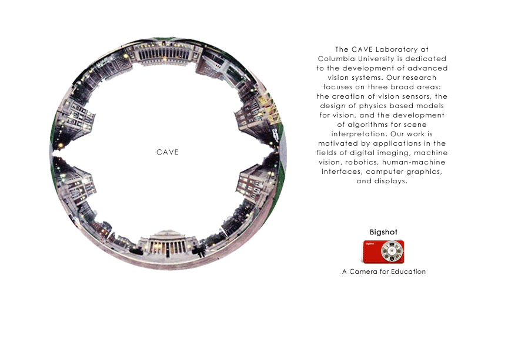

|

The CAVE Laboratory at Columbia University is dedicated to the development of advanced vision systems. Our research focuses on three broad areas: the creation of vision sensors, the design of physics-based models for vision, and the development of algorithms for scene interpretation. Our work is motivated by applications in the fields of digital imaging, machine vision, robotics, human-machine interfaces, computer graphics, and displays. Bigshot: Camera for Education |
||